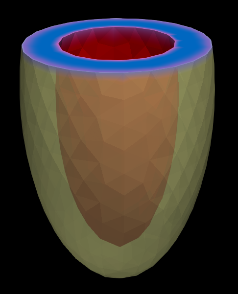
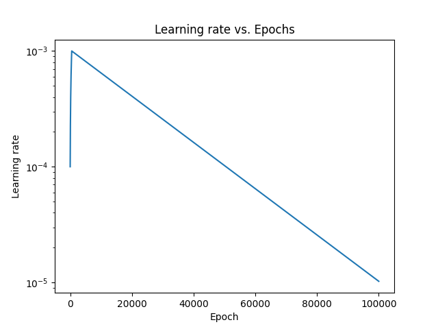
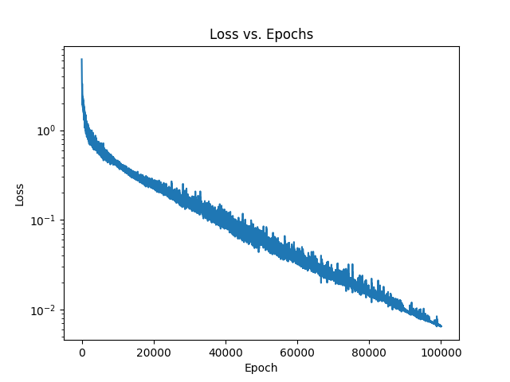
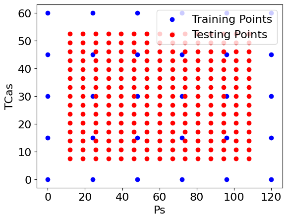
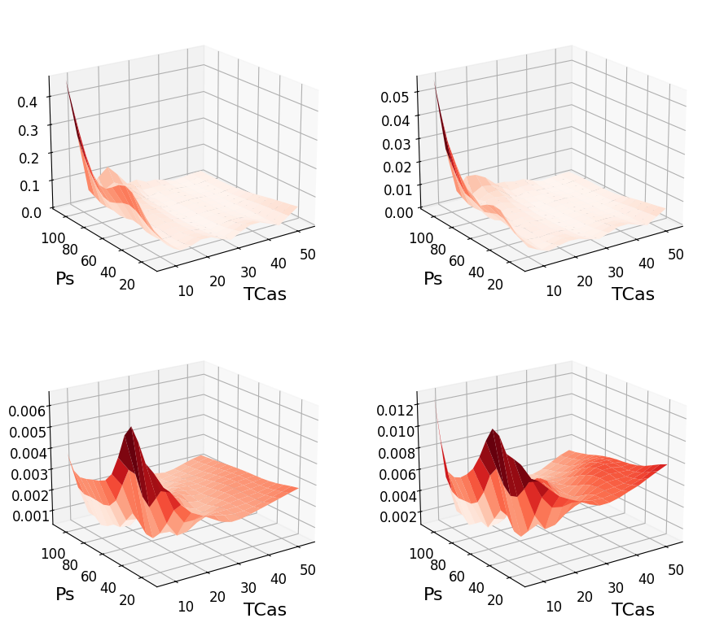

In Depth Explanation of NNFE for Prolate Spheroidal Model¤
Here, we will describe in more detail the prolate spheroidal example presented in the SoftwareX paper. We'll first describe the PDE we're solving. Then how to setup the appropriate network and why the parameters were chosen. Then we'll go through the different NNFE components. Lastly, we'll show the training curve and final results.
Prolate Spheroidal Model¤
The PDE being solved is a hyperelastic material model which is the same as the one used here. The strain energy function is split into deviatoric and volumetric componenets
The deviatoric component is given by a transerve isotropic form where fibers are defined
where \(E_{ij} = \mathbf{v}_i \cdot \mathbf{E} \mathbf{v}_j\) is the Green-Lagrange strain contracted in the corresponding fiber, sheet, and normal directions. The volumetric component is given by
where \(J = \det(\mathbf{F})\) is the determinant of the deformation gradient. The total stress is given by adding the active stress component which is defined by
where \(\mathbf{f}\) is the fiber direction and \(T_{Ca}\) is the magnitude of active stress. The resulting PDE form looks like the following:
Configuration File Specifications¤
FE Config¤
Now, we have to create a configuration file that mimics the above model. This will be the FE component of the project in building the residual. We want to solve for the displacement field \(\mathbf{u}(\mathbf{x}) \in \mathbb{R}^3\), \(vec=3\), over the mesh \(\Omega \in \mathbb{R}^3\), \(dim=3\). We are pulling the LV mesh, displayed below, which has linear tets, \(gauss\_order=1\).
fe_config:
var: "u"
mesh_path: "LV.vtk"
mesh_generator:
name:
kwargs:
kwargs:
ele_type: "tetrahedron"
gauss_order: 1
dim: 3
vec: 3
The base, which we hold fixed in all directions, is colored blue, and the red is the endocardium where the pressure is applied. These will be our two boundary conditions, one static Dirichlet, the other functional surface integral. The PDE \(\eqref{eq:PDE}\) is already predefined with Hao_active in CARDIAX. The internal variables for fiber, sheet, and normal directions are all predefined on the mesh, so they just take the mesh value. The TCa variable is being changed, so we make it default to 1. to just scale appropriately.

pde_config:
pde_info:
pde_class: "Hyperelasticity"
pde_type: "Hao_active"
material_constants:
internal_vars:
u:
fibers:
value: "mesh"
sheets:
value: "mesh"
normals:
value: "mesh"
TCa:
value: 1.
vec: 1
dirichlet_bc_info:
u:
bc1:
type: "Dirichlet"
component: [0, 1, 2]
value: [0.0, 0.0, 0.0]
surface_tag: "base"
static: True
surface_maps_info:
u:
bc2:
var: ["n", "p"]
type: "Pressure"
value: 1.
surface_tag: "endo"
static: False
Lastly, the solver won't be used for the training but will be used in post-processing. Here, we use Newton with only 20 max iterations because we're hoping the network will give us good approximations.
ML Config¤
Now that we have defined the PDE and other FE variables, we must define the machine learning components. These values were mostly taken from experimental trial and error. It was found that 1e5 epochs worked well enough for our application. Since we don't have many variables to train over, we can use full gradient descent here. When \(batch\_size \in [0, 1]\), it's treated as a percentage of the dataset, thus we're using 100%.
For the network architecture, we're using the ResNet defined in networks.py. The kwargs for that function are matched here to be unpacked. The model is also not static because these are the parameter weights we are training.
networks:
Network1:
name: "ResNet"
kwargs:
in_size: 2
out_size: "dofs"
width_size: 128
depth: 6
activation: "swish"
use_bias: True
use_final_bias: True
load_model:
static: False
The best optimizer was adam with a warmup learning rate scheduler. Other options are shown in optax if you want to try out others.
optimizer:
name: "adam"
learning_rate: 1.0e-1
scheduler:
toggle: True
boundaries: []
schedules:
s1:
name: "warmup_exponential_decay_schedule"
kwargs:
transition_steps: 1.e+5
decay_rate: 1.0e-02
init_value: 1.0e-04
peak_value: 1.0e-03
warmup_steps: 500
optimizer_kwargs:
learning_rate:
NNFE Config¤
Now we pull the above two configuration files with the NNFE params. The project section just defines the directory structure of each run.
project:
name: Results # Project title
parent_dir: "."
save: True # Set to False if testing
print_progress: 1.0e+1 # When to print the loss and other information
save_progress: 1.0e+4 # When to save the parameters and update plots
extra_dirs:
results_dir: "results" # Directory to save results
model_dir: "models" # Directory to save models
plot_dir: "plots" # Directory to save plots
log_dir: "logs" # Directory to save logs
config_dir: "config_files" # Directory to save input files
# FE Problem to solve defined in a separate yaml file
FE: "fe_input_file.yaml"
# All parameters associated with the machine learning part of NNFE
# Split into Network and Optimizer
ML: "ml_input_file.yaml"
Here, we are determining which parameters we are learning with the network. We want to learn the \(T_{Ca}\) values defined in \(\eqref{eq:active}\), and the pressure \(p\) in \(\eqref{eq:PDE}\). Thus, we point to \(T_{Ca}\) under internal and \(p\) under surface, and we have no essential boundaries to train.
# Controls the overall control need for NNFE
NNFE:
natural:
internal:
u: ["TCa"]
surface:
u:
bc2: ["p"]
essential:
u:
natural_order: ["p", "TCa"]
essential_order: []
With the parameters tagged, we now need to set the range of the parameters. Here, we want up to 120 mmHg for the pressure (in spot 1 as shown above) and up to 60 kPa for the active stress. We then take 6 samples of pressure and 5 of active stress. The testing sampler can then line up between the training samples to show a maximal interpolation error since these points will be farthest from the trained ones.
sampler:
training_sampler: "uniform"
training_kwargs:
mins: [0., 0.]
maxes: [120., 60.]
samples: [6, 5]
testing_sampler: "uniform"
testing_kwargs:
between_training: True
mins: [0., 0.]
maxes: [120., 60.]
samples: [6, 5]
Training Script¤
Given how much effort goes into the configuration files, we expect the actual script to be manageable. In fact, it's very minimal for training. We just use os to make sure we run on the appropriate GPU and jax to toggle off x64. Then we need only train.
import os
import jax
from nnfe import NNFE
os.environ["CUDA_VISIBLE_DEVICES"] = "0"
jax.config.update("jax_enable_x64", False)
nnfe = NNFE.from_yaml("configs/nnfe_params.yaml")
nnfe.train()
Results¤
After training, we have a new directory created in the demos folder titled Results with the random number, in this case 6913. The config file was dumped in one large file as resolved_nnfe_config.yaml. The model was saved as model.eqx, and two plots showing some training metrics are under plots. Lastly, running.txt will have nothing while the model is training but output the training time once completed.
Results/
├── 6913/
│ ├── config_files/
│ │ └── resolved_nnfe_config.yaml
│ ├── models/
│ │ └── model.eqx
│ ├── plots/
│ │ ├── loss.png
│ │ └── LR.png
│ ├── logs/
| ├── results/
│ └── running.txt
The two plots shown are the learning rate and loss


Now, to determine if the training actually worked, we can plot both the residual loss and the error vs. standard FE solutions. This can be found in check_test.py where nnfe.test is used to generate the FE solutions with the solver. We then can see the points that were checked in red vs. the trained ones in blue.

We can also see the error surface, which looks very good because it only increases near the boundary. The top row is the residual, and the bottom row is the error vs. the FE solution. The left column is \(L^2\) metric and the right is \(L^\infty\).

Now, these errors are nice, but we want to see the physical simulations comparison. This is done in pv_check.py where we check the model vs. simulation in three different pressure-volume loops. The final results are shown in the video below with the red dots being the NN prediction and the wiremesh is the FE solution: